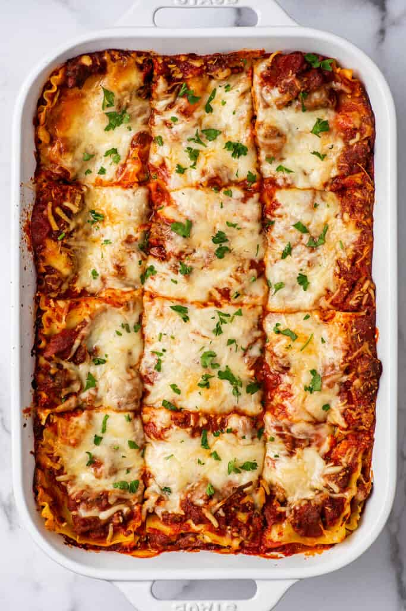

Lasagna

Worlds Best Lasagna
Lasagna is by far the best Italian plate in the world, here is why. The taste of it is amazing there are many ways to describe it. Such as the cheesy warm goodness of the taste that makes it amazing.
It is soft and saucy when preparing it from scratch. The Pasta and cheese melts the cheese to make it feel smooth and the slippery pasta when you cant pick it with a fork.
Ingredients
- 1 lb. sweet Italian Sausages
- 3/4 lb. lean ground beef
- 1/2 cup minced oion
- 2 cloves garlic, crushed
- 1 (28oz.) can crushed tomatoes
- 2 (6oz.) cans tomato paste
- 2 (6.5oz.) cans canned tomato sauce
- 1/2 cup water
- 2 tbsp white sugar
- 1.5 tsp dried basil leaves
- 1.5 tsp fennel seeds
- 4 tbsp chopped fresh parsley
- 12 lasagna noodles
- 16oz. ricotta cheese
- 1 egg
- 3/4 lb. mozzarella cheese,sliced
- 3/4 cup grated Parmesan cheese